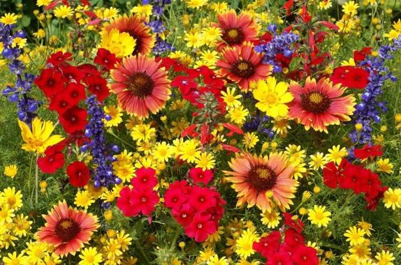
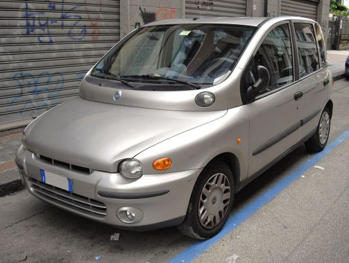
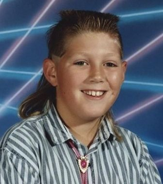

En fin de cursus en école de commerce, voici devant vous ma première page web et en profite pour vous dévoiler une (petite) partie de moi. Bon voyage :)
|  |
Les fleursJ'ai grandi au milieu des champs de fleurs, j'adore donc les fleurs, encore plus quand c'est la fête des fleurs, au printemps. Vive les fleurs !! |
|  |
Les MultiplasLe multipla est la voiture de mon enfance également, quel plaisir de la revoir en photo. Tellement d'heureux souvenirs avec cette voiture : les départs en vacances, les batailles de cartes avec mon frère Bruno, les burns de Papa sur le parking du JouetClub ... Elle me manque beaucoup ! |
|  |
La coupe muletJ'adore cette coupe. Elle ne m'a pas quitté de la 5ème à la terminale, quand Maman m'a dit qu'il fallait que je coupe mes cheveux pour aller à l'école de commerce. Mais quand j'aurai trouvé du travail, si mon employeur est d'accord, je la refais direct ! |
J'ai codé cette page tout seul le 14 Novembre 2018 au cours du Wagon Lille batch 206, à 14h25. Très belle première expérience, merci le Wagon !